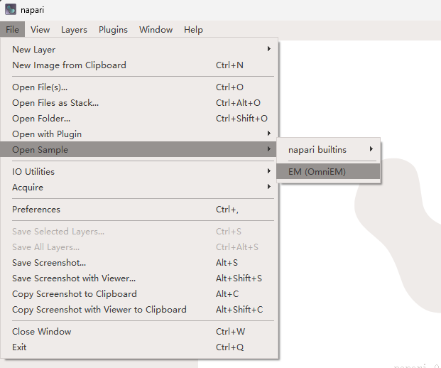

Getting Started with Napari-OmniEM
This guide provides a quick introduction to Napari-OmniEM and helps you get up and running with your first inference task.
Installation
Currently, Napari-OmniEM is supported only via source installation.
Please follow the instructions in the Installation Guide.
Launch Napari and OmniEM
Launch napari from the command line
napari
Enable the OmniEM plugin
In the napari menu bar, open Plugins and select OmniEM.

Load sample EM data
Napari-OmniEM provides built-in sample electron microscopy datasets for quick testing.
- Load sample files directly from the OmniEM panel:

- Alternatively, load your own data via File → Open File(s) in the napari menu.
Interface overview
After loading the plugin and EM data, click the 🔄 Refresh/Register button in the Napari-OmniEM panel to register the currently loaded data.
Once registered and selected a data, the napari interface should appear similar to the following:

Next Steps
Continue with the detailed user guides to explore OmniEM features: